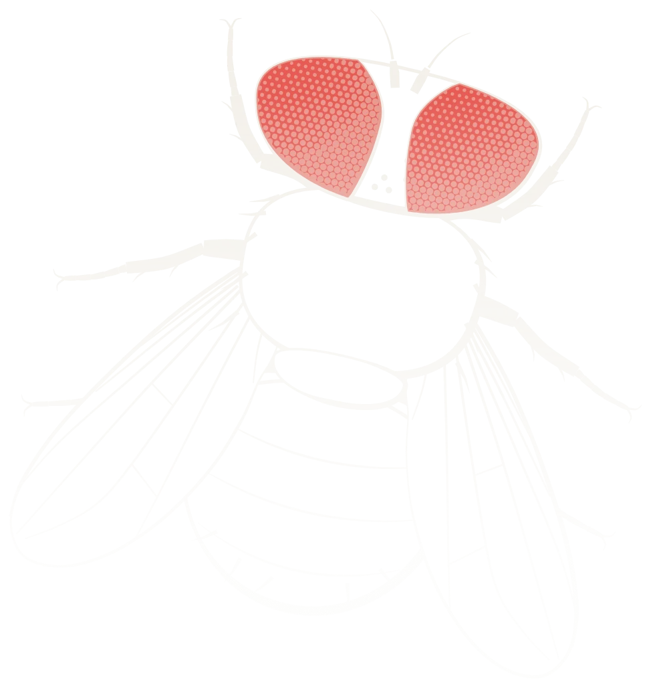
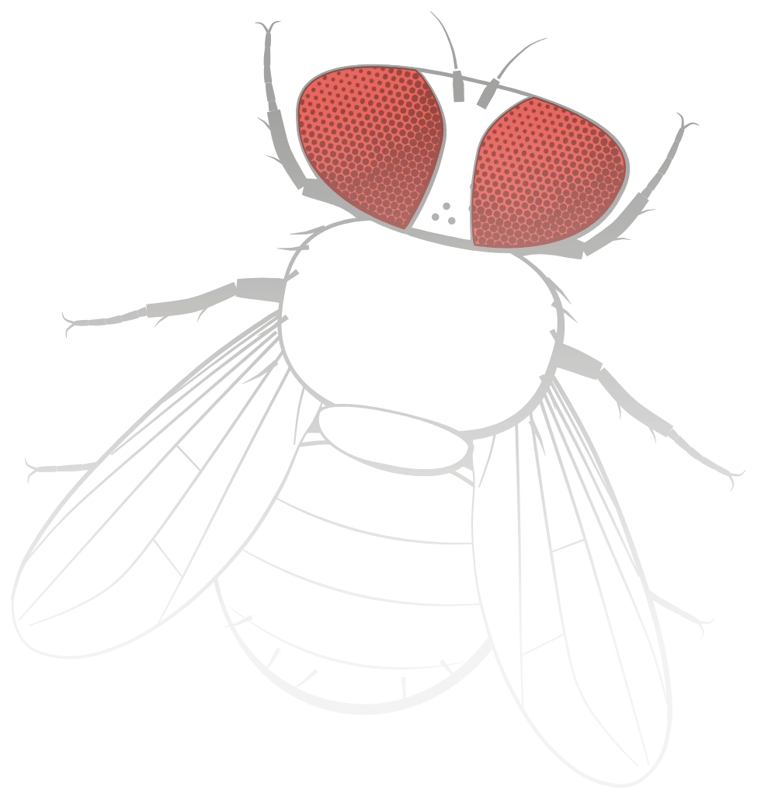
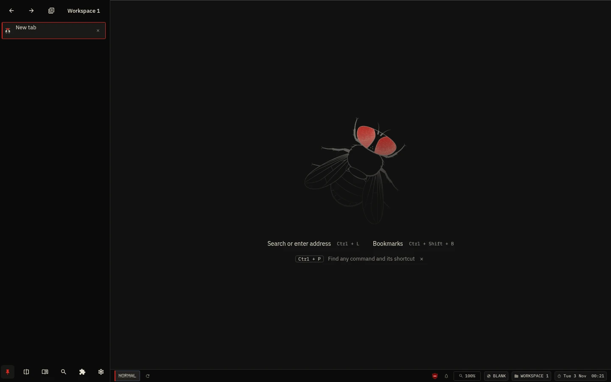

Fly Browser
A Linux browser built on Chromium, designed to be used from the keyboard.
f Click links on this page from the keyboard, as in Fly.


- Ad and tracker blocking uBlock Origin Lite included
- Workspaces each one is a separate Chromium profile
- Tab suspension background tabs pause and resume without reloading
- Split view two pages side by side
- No telemetry your data stays on your computer
Interface
Tabs are listed in a vertical sidebar. A status bar at the bottom shows the keyboard mode, zoom, workspace and clock. The command palette, workspaces, history and preferences open as panels over the page.

Keyboard navigation
Every browser function has a shortcut. Outside text fields, single keys also work on the page: j k to scroll, f to click links. The mouse works as usual.
| Shortcut | Page key | Action |
|---|---|---|
| Ctrl L | o | Floating address bar |
| Alt F | f | Link hints |
| Ctrl P | – | Command palette |
| Ctrl Shift S | – | Split view |
| Ctrl Shift W | w | Workspace dashboard |
| Alt S | s | Sidebar focus |
| Ctrl Shift H | – | History |
| Ctrl , | – | Preferences and key editor |
Every binding can be changed in Preferences → Keyboard. Full keyboard reference
Installation
The installer detects your package manager and installs the DEB, RPM or pacman package. It verifies the package signature before asking for your password.
curl -fsSL https://arzuparreta.github.io/fly-browser.github.io/packages/fly-install -o fly-install
bash fly-install install --packageUpdates
| Debian, Ubuntu | sudo apt update && sudo apt upgrade |
|---|---|
| Fedora | sudo dnf upgrade |
| openSUSE | sudo zypper dup |
| Arch | sudo pacman -Syu |
Install without root
bash fly-install install --native installs Fly in ~/.local/share/fly-browser. Updates are installed from Fly's Preferences.
Or download a package .deb .rpm .pkg.tar.zst .tar.gz
Linux x86_64 with glibc. Immutable systems such as Silverblue and NixOS are untested. Installation guide